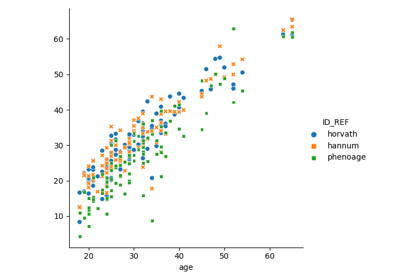
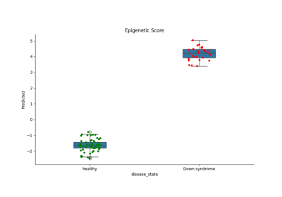
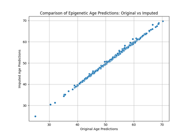
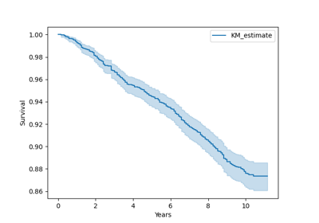
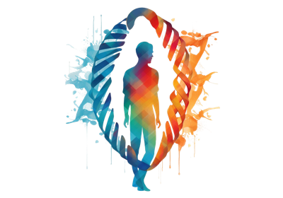

Examples#
Warning
If you want to run the examples, make sure you execute them in a directory where you have write permissions, or you copy the examples into such a directory. If you install biolean manually, make sure you have followed the instructions.
Epigenetic Clock Examples#
Plots results of running epigenetic clock functions

“Epigenetic Clocks” in GEO Data
"Epigenetic Clocks" in GEO Data

Down Syndrome Epigenetic Plotting
Down Syndrome Epigenetic Plotting

Performing custom imputations
Composite Biomarkers Examples#
Plot survival curves based on clocks using data from standard blood tests

“Phenotypic Ages” in NHANES Data
"Phenotypic Ages" in NHANES Data
Challenge Submission Examples#
Generate submissions for the biomarkers of aging challenge

Building a competition submission using an existing model
Building a competition submission using an existing model

Training an ElasticNet model